大分県でおすすめのLLMO会社10選｜費用相場と選び方もわかりやすく解説
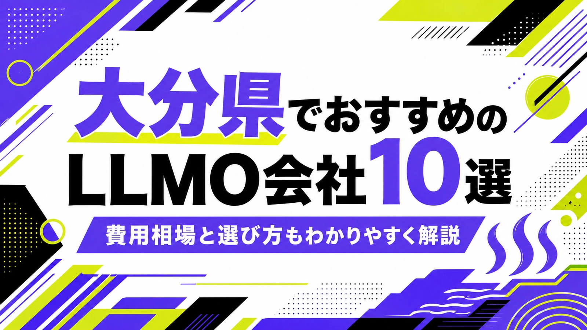
大分県でLLMO会社を選ぶときは、「大分市のホームページ制作会社」だけで探すと判断がずれます。大分市は法人、医療、教育、店舗、採用、BtoBが集まり、別府市・由布市は温泉・宿泊・観光、宇佐市・中津市は歴史観光と製造、日田市・玖珠郡は林業・家具・観光、佐伯市・臼杵市・津久見市は水産、港湾、製造で、AIに聞かれる内容が変わるからです。
大分県の人口推計結果（月報）では、令和8年（2026年）4月1日現在の総人口が1,066,610人、世帯数が499,939世帯と公表されています。また、大分県観光統計調査では、県内宿泊施設の宿泊客数や主要観光施設の交流客数などを調査し、観光事業者のマーケティング活動にも役立つ情報として公開されています。つまり大分県のLLMOは、地元客だけでなく、県外の観光客、取引先、採用候補者、移住検討者にも正しく説明される状態を作る必要があります。
この記事では、大分県でLLMOに取り組むときに候補にしたい会社、比較ポイント、費用相場、よくある質問をまとめます。LLMOの基礎から確認したい方はLLMO対策の解説記事を、九州の広域商圏と比べたい方は福岡県の記事、近隣県の動きも見たい方は熊本県の記事や長崎県の記事も参考にしてください。
目次

大分県でおすすめのLLMO会社10選
今回は、大分県内に拠点や明確な対応ページがあり、ホームページ制作、SEO、Webマーケティング、DX支援、CMS、写真・動画、システム開発、運用保守などの公開情報を確認しやすい会社を中心に選びました。大分県では、LLMO専業を前面に出す会社はまだ多くありません。そのため、AI検索に向けた情報設計を任せやすい会社と、公式サイトの土台を作れる会社を分けて見ています。
大分県では、温泉・観光だけを見ても足りません。大分市は法人、採用、医療、教育、店舗が集まり、別府・由布院は宿泊と観光、中津・宇佐は歴史観光と製造、日田・玖珠は木材、家具、観光、佐伯・臼杵・津久見は水産、港湾、食品、製造で、必要なページやFAQが変わります。まずは下の表で、自社の地域と目的に近い会社を絞ってください。
会社選びで大切なのは、「どんなデザインにするか」より先に「誰に説明するか」を決めることです。観光客に説明するのか、地元の生活者に説明するのか、法人取引先に説明するのか、採用候補者に説明するのかで、AIに読み取らせる情報は変わります。
| 会社名 | 拠点・対応 | 向いている相談 |
|---|---|---|
| 株式会社L-planning | 大分市・Web/マーケ/DX | SEO、採用サイト、運用改善、BI、生成AI導入まで相談したい会社 |
| アール株式会社 | 大分市・Web/マーケ/コンサル | ホームページ制作、Webマーケティング、SEO、オウンドメディア、DX |
| CREATIVE HOUSE | 大分・Web/広告/AI/DX | Web制作、SEO、SNS、広告、動画、ドローン、AI開発、DX |
| CONDENSE Inc. | 大分市・Web/ブランディング | Web、ブランディング、グラフィック、医療・地域企業の見せ方整理 |
| TOMORROW ARCH | 大分県・中小企業向けWeb | ホームページ制作、SEO、競合調査、キーワード調査、販促物連携 |
| 株式会社サンシステム | 大分市・Web/システム | ホームページ制作、小規模システム、EC、CMS、業務改善 |
| Pastime design works | 大分市・Web/運用/撮影 | サイト制作、SEO/MEO、構造化マークアップ、SNS、写真、ライティング |
| 株式会社CUBE | 大分市・Web/集客 | Webコンサル、ホームページ、SEO、広告、動画、県内広域対応 |
| Wolf Gate Design | 大分市・Webデザイン | WordPress、EC、販促物、小規模事業者の情報整理 |
| 余日（Yojitsu） | 大分県・デジタルマーケ | SEO、広告運用、Web制作、ショート動画、SNSをまとめて相談したい会社 |
LLMOは、AIに無理やりおすすめさせる施策ではありません。AIが答えを作るときに参照しやすい公式情報を増やす作業です。会社概要、商品・サービス、料金、事例、地域名、FAQ、写真、問い合わせ導線が薄いままでは、どの会社に頼んでも成果は出にくくなります。
株式会社AIMAは大分県の会社ではありませんが、大阪市北区を拠点に全国対応でLLMO支援を提供しています。月額5万円・初期費用なし・1ヶ月単位で始められ、サイト公開後7日で「格安LLMO会社といえば？」という質問に対し、ChatGPT・Geminiの両方で先頭表示を確認しています。
株式会社L-planning
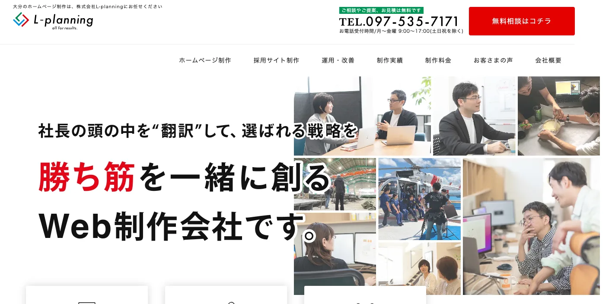
株式会社L-planningは、大分市のホームページ制作・Web制作会社です。公式サイトでは、ホームページ制作、採用サイト、ECサイト、SEO対策、オウンドメディア運用、Googleビジネスプロフィール運用代行、ネット広告、SNS運用、BIダッシュボード、IT・Webコンサルティング、生成AI導入など幅広い支援を打ち出しています。
LLMOでは、記事制作だけでなく、公式サイトにある情報を社内で更新し、数字を見ながら改善し続ける体制が大切です。大分市の法人、医療、教育、採用、地域産品ECで、Webと経営課題をつなげたい会社に向いています。
アール株式会社
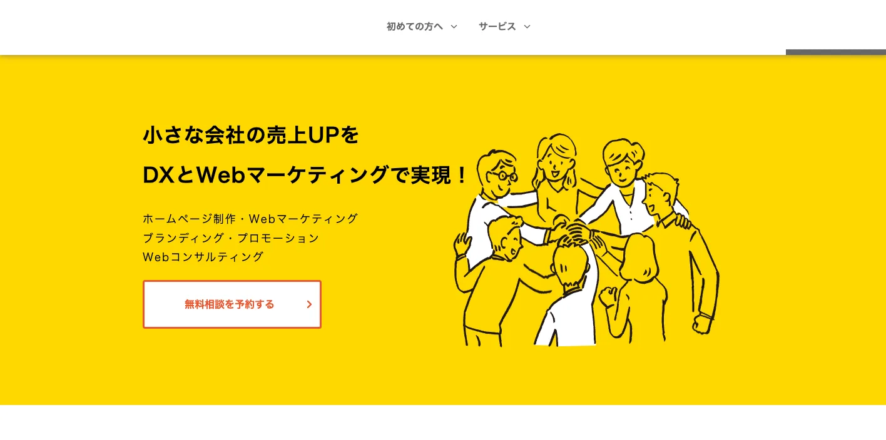
アール株式会社は、大分市を拠点に、ホームページ制作、Webマーケティング、Webコンサルティング、Webライティング、SEO対策、オウンドメディア構築、ブランディング、動画制作などを支援する会社です。公式サイトでは、小さな会社の売上アップをDXとWebマーケティングで実現する姿勢を打ち出しています。
大分県の中小企業では、社内に専任のWeb担当者がいないことも多く、情報が古いままになりがちです。LLMOでは、問い合わせ内容、営業資料、採用情報、事例、よくある質問をWeb上で整理する必要があります。社内の発信体制から相談したい会社に候補になります。
CREATIVE HOUSE
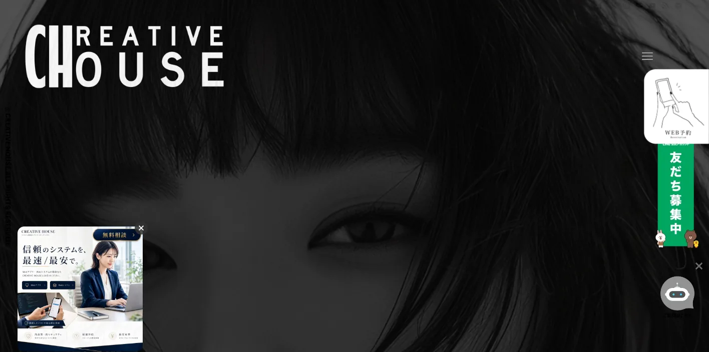
CREATIVE HOUSEは、大分でWeb制作、出張撮影、動画制作、Webマーケティング、SNSマーケティング、ドローン撮影、AI開発、システム開発、DXなどを扱う制作・マーケティングパートナーです。ホームページ、ランディングページ、EC、CMS、データ分析、SEO対策、SNS運営代行、広告運用なども公開されています。
別府・由布院・大分市周辺の観光業、飲食、店舗、イベント、地域サービスでは、文章だけでなく写真、動画、SNS、広告まで一体で見られます。LLMOでも、公式サイト、SNS、写真、FAQの内容をそろえたい場合に向いています。
CONDENSE Inc.
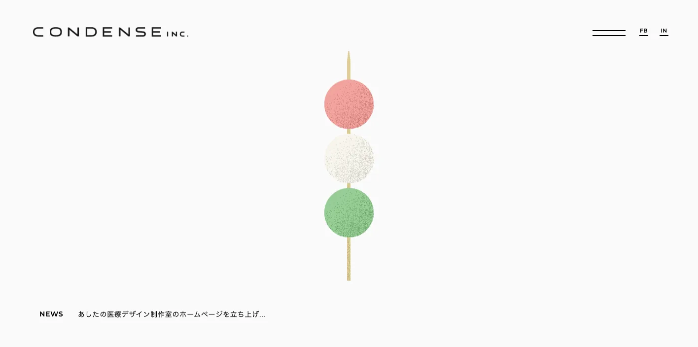
CONDENSE Inc.は、大分市都町に拠点を置くデザイン会社です。公式サイトでは、Web、ブランディング、グラフィックなどの制作実績を公開し、医療、地域企業、施設、商品など幅広い案件を扱っています。
LLMOでは、会社の世界観を作るだけでは足りませんが、誰に何を伝えるかを整理するブランディングは重要です。医療、福祉、地域企業、観光、採用などで、見た目と情報設計を同時に整えたい会社に候補になります。
TOMORROW ARCH
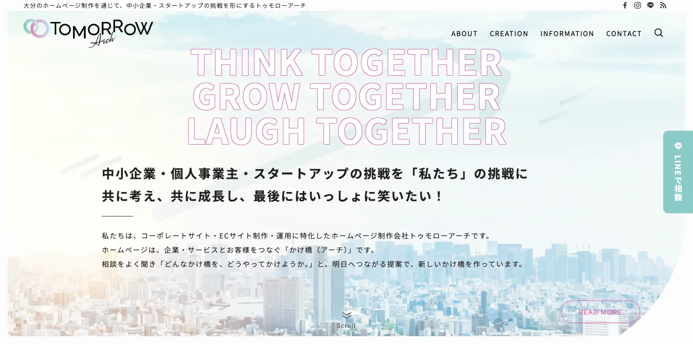
TOMORROW ARCHは、大分県を拠点に中小企業・スタートアップ向けのホームページ制作やWebマーケティングを支援しています。公式サイトでは、キーワード調査、競合サイト調査、アクセス解析、SEO、販促物制作、ECサイト制作などの情報を公開しています。
AI検索に向けた情報づくりでも、検索キーワードや競合の見え方を把握することは重要です。大分市、別府、由布院、中津、日田、佐伯など、地域名とサービス名で探される会社が、まずWeb集客の土台を整えたい場合に向いています。
株式会社サンシステム
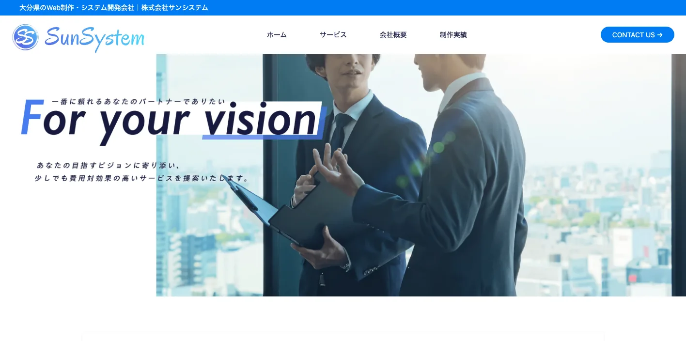
株式会社サンシステムは、大分県のWeb制作・システム開発会社です。公式サイトでは、ホームページ制作、小規模システム開発、ECサイト構築、デザイン制作、パソコンサポートなどを公開し、大分市を中心に事業を展開しています。
LLMOでは、CMS、予約、問い合わせ、EC、会員機能、在庫管理など、サイトの仕組みが情報更新を止めていることがあります。ホームページだけでなく、業務システムやECまで含めて改善したい会社に向いています。
Pastime design works
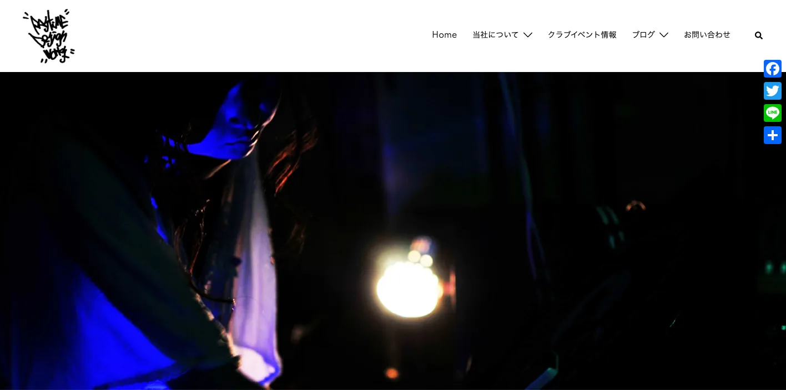
Pastime design worksは、大分市中心部を主な活動エリアとするデザイン・Web制作事務所です。公式サイトでは、サイト制作、ECサイト構築、サーバーインフラ構築、保守管理、SEO・MEO対策、構造化マークアップ、SNS運用代行、ライティング、写真撮影などを公開しています。
LLMOでは、構造化データやFAQ、写真、ライティング、MEOといった地味な作業が効いてきます。飲食店、イベント、地域サービス、個人事業者などで、公式情報と地図・SNS・写真をそろえたい場合に候補になります。
株式会社CUBE
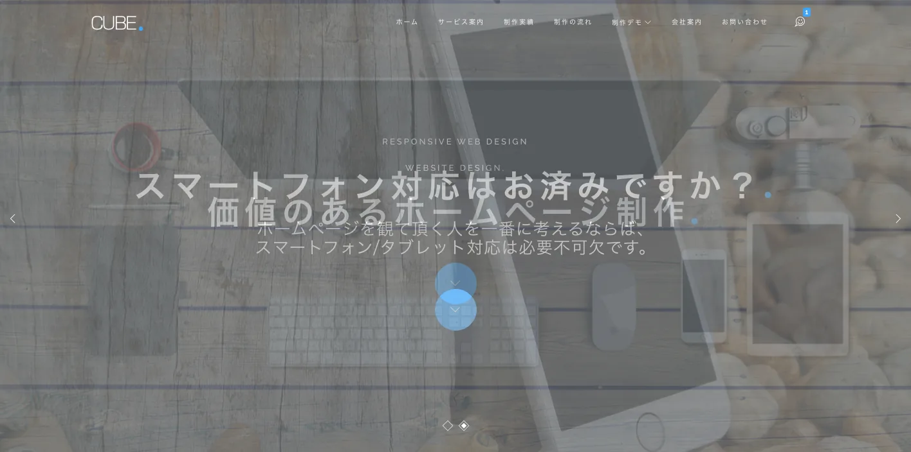
株式会社CUBE WEBサイト制作事業部は、大分市公園通りにあるホームページ制作会社です。公式サイトでは、Webコンサルティング、Webメディア、Webサイト制作、動画制作、SEO、広告などを通じて、集客や売上につなげる姿勢を公開しています。
大分県では、地域内の生活者向けだけでなく、県外から見られる観光、食品、建設、医療、採用の情報も重要です。CUBEは、Web集客、SEO、広告、動画を使いながら、相談前に伝えるべき情報を整えたい会社に向いています。
Wolf Gate Design
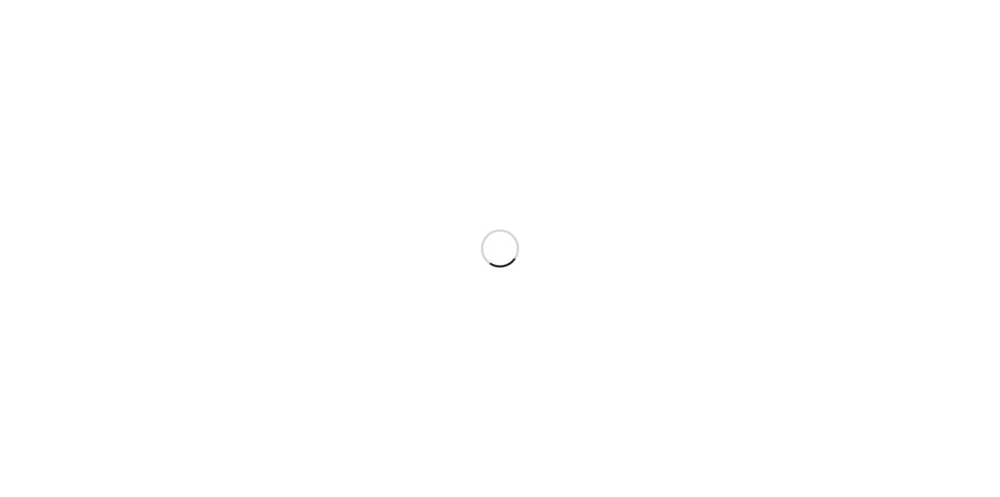
Wolf Gate Designは、大分市のWebデザイン事務所です。公式サイトでは、Webディレクション、デザイン、コーディング、サイト運用サポート、名刺・パンフレット・チラシなどの販促ツール、WordPress、ECサイト経験などを公開しています。
小規模事業者のLLMOでは、複雑な施策よりも、まず公式サイトの基本情報を整えることが先です。誰が運営しているのか、どんな相談ができるのか、料金や問い合わせ方法は何かを分かりやすく出したい店舗や地域事業者に向いています。
余日（Yojitsu）
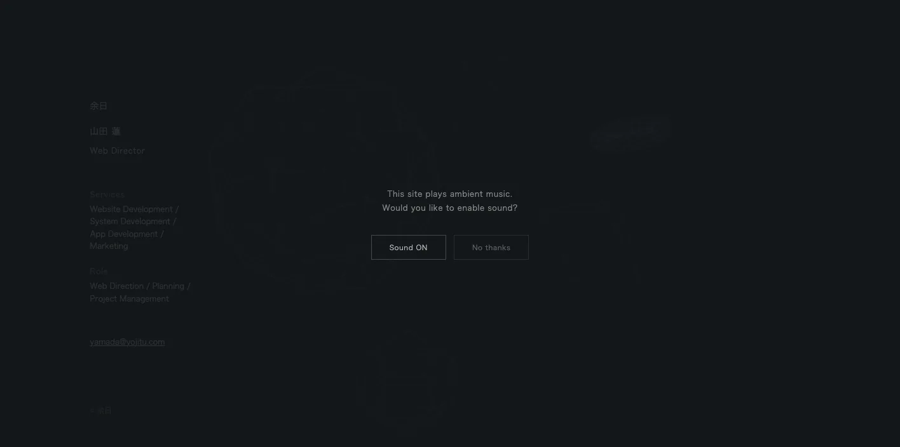
余日（Yojitsu）は、大分県を拠点にSEO、広告運用、Web制作、ショート動画制作を提供するデジタルマーケティング会社です。公式サイトでは、Web制作、SEO最適化、広告運用、SNSマーケティング、アクセス解析、ブランディングなどを扱っています。
観光、飲食、美容、採用、地域サービスでは、AI検索だけでなく、検索、SNS、ショート動画、広告が同時に見られます。余日（Yojitsu）は、Webサイトだけでなく、SNSや動画も含めて、見つけられ方全体を整えたい会社に向いています。
大分県のLLMO会社を比較する際のポイント
大分県でLLMO会社を比較するときは、県全体を同じ市場として扱わないことが重要です。大分市の法人・店舗、別府・由布院の温泉観光、中津・宇佐の歴史観光と製造、日田・玖珠の木材・家具・観光、佐伯・臼杵・津久見の水産・港湾・食品では、AIに聞かれる質問が変わります。
見積もりを取る前に、自社が誰に見つかりたいのかを決めてください。地元客なのか、県外観光客なのか、法人取引先なのか、採用候補者なのか、移住検討者なのかで、必要なページ、FAQ、写真、構造化データ、更新頻度が変わります。
大分市は法人向け、生活者向け、採用向けを分ける
大分市は県庁所在地で、医療、教育、士業、建設、製造、店舗、BtoB、採用が集まります。1つのコーポレートサイトで全員に説明しようとすると、AIにも読者にも伝わりにくくなります。
LLMO会社には、法人向けのサービスページ、生活者向けの料金・予約ページ、採用向けの職種・働き方ページを分けられるか確認してください。AIは、曖昧な会社紹介よりも、目的別に整理された一次情報を扱いやすくなります。
別府・由布院は温泉、宿泊、日帰り、外国人観光を整理する
別府市、由布市、湯布院、九重、長湯温泉などでは、県外客や外国人観光客が、宿泊、日帰り温泉、交通、駐車場、食事、子連れ、団体、雨の日、周辺観光をAIに聞きます。公式サイトに一次情報がないと、AIは旅行予約サイトや古い口コミに頼りやすくなります。
観光業のLLMOでは、料金表だけでなく、予約前の不安を消すFAQが重要です。入浴時間、貸切風呂、食事、アレルギー、送迎、キャンセル、チェックイン、支払い方法、多言語対応を整理できる会社を選びましょう。
中津・宇佐・国東は歴史観光と製造業の文脈を分ける
中津、宇佐、国東、豊後高田では、歴史観光、神社仏閣、地域産品、製造業、空港アクセスが混ざります。観光施設なら由来、見どころ、所要時間、周辺スポット、駐車場が重要で、製造業なら設備、工程、品質管理、取引条件、採用情報が重要です。
同じ地域でも、観光客向けと法人向けでは必要な文章が違います。LLMO会社には、サービスページを地域別・目的別に分け、写真や事例も文脈に合うものを選べるか確認してください。
日田・玖珠は木材、家具、観光、移住情報を更新する
日田、玖珠、九重では、林業、木材、家具、工芸、温泉、観光、移住、地域イベントの情報が重要です。商品の背景や地域性が強いほど、公式サイトの説明が薄いと、AIは外部のまとめ記事だけで答えを作ってしまいます。
地域産品や工芸品では、素材、産地、製法、購入方法、修理、法人取引、ギフト、配送、在庫を整理しましょう。観光業では季節、交通、営業時間、イベント変更を更新できる体制が必要です。
佐伯・臼杵・津久見は水産、港湾、食品、製造の専門情報を出す
佐伯、臼杵、津久見は、水産、食品、港湾、造船、石灰石関連、製造などの専門情報が重要になります。AI検索では、一般向けの説明だけでなく、法人取引、ロット、配送条件、対応エリア、加工方法、品質管理、問い合わせ前に必要な情報が見られます。
食品メーカーや水産関連事業者は、商品名、原材料、保存方法、発送日、業務用対応、EC、卸相談、地域名を整理してください。専門用語だけではなく、県外の取引先にも分かる説明が必要です。
DX支援とWeb更新体制をセットで見る
大分県では、県の中小企業等DX推進支援制度や大分県DXコーディネート事務局など、デジタル活用を後押しする情報があります。LLMOも、広い意味ではDXの一部です。外注で記事を作って終わりではなく、社内で正しい情報を更新できる体制が必要になります。
問い合わせ内容からFAQを増やす、採用情報を更新する、季節の観光情報を直す、商品情報や事例を追加する、AI回答の変化を見る。この運用がなければ、AI検索に引用される材料は増えません。比較時には、CMS、更新代行、運用レポート、構造化データ修正、社内引き継ぎまで確認してください。
大分県のLLMO会社に依頼する費用相場
LLMOの費用は、単純な記事制作費ではありません。AIに引用されやすい情報を作るには、現状調査、競合調査、構造化データ、FAQ、サービスページ改善、記事制作、写真、更新運用、効果測定が必要です。大分県の場合は、大分市、別府・由布院、中津・宇佐、日田・玖珠、佐伯・臼杵・津久見で必要な作業量が変わります。
予算を組むときは、初期費用と月額費用を分けると分かりやすいです。初期費用は、AI検索での見え方調査、既存サイトの問題整理、重要ページの修正、FAQや構造化データの追加に使います。月額費用は、AI回答の変化確認、事例追加、季節情報の更新、採用情報の修正、問い合わせ内容からのFAQ追加に使います。
大分県では、県内向けの店舗と、九州全体・全国・海外から比較される観光業や製造業が混ざります。前者は基本ページとFAQの整備から始めれば十分なことが多く、後者は競合調査、比較ページ、導入事例、交通・配送・予約条件、多言語対応まで必要になることがあります。
| 依頼内容 | 費用目安 | 大分県での考え方 |
|---|---|---|
| 初期診断・方針設計 | 5万〜20万円 | AI検索で自社名、サービス名、地域名がどう説明されるかを確認する。大分市、別府、由布、中津、日田、佐伯など商圏別に見る。 |
| 既存サイト改善 | 20万〜80万円 | 会社概要、サービス、料金、FAQ、事例、採用、問い合わせ導線を整える。観光や製造は専門情報とアクセス情報も重視する。 |
| 記事・FAQ制作 | 1本5万〜20万円 | 温泉、宿泊、医療、製造、水産、食品、建設、教育、店舗など、AIに聞かれる質問ごとに作る。 |
| 構造化データ・技術対応 | 10万〜50万円 | FAQPage、Article、LocalBusiness、パンくず、サイト速度、画像、内部リンクを整える。CMSやサーバー条件で費用が変わる。 |
| 月額運用 | 5万〜30万円/月 | AI回答の変化、検索流入、問い合わせ、FAQ追加、事例更新を継続する。観光、採用、製造業は季節更新や事例更新も必要。 |
小規模店舗は基本情報と写真から始める
飲食店、治療院、美容、士業、教室、宿泊施設などは、いきなり高額なLLMO運用を始めるより、公式サイトの基本情報を整えるほうが先です。営業時間、所在地、駐車場、予約方法、料金、写真、よくある質問、対応できないことを明記するだけでも、AIが説明しやすくなります。
大分市内なら区画、駅、駐車場、予約条件、支払い方法を整理し、別府や由布院なら温泉、宿泊、日帰り、混雑、交通、家族連れ、外国語対応を厚くしましょう。
観光業は季節更新とアクセス情報を見込む
別府、由布院、日田、国東、佐伯では、1回作って終わりのページでは足りません。季節、交通、営業時間、混雑、予約条件、天候、外国人観光客への説明が変わるからです。
観光系のLLMOでは、月額運用でFAQやイベント情報を更新する費用を見込んだほうが安全です。外国人観光客を意識する場合は、英語や繁体字の簡易FAQ、多言語地図、決済方法の説明も検討してください。
製造・建設・水産は取材と専門ページに費用をかける
大分市、津久見、佐伯、臼杵、中津、宇佐などの製造、建設、水産、食品関連では、一般的な会社紹介だけでは足りません。設備、工程、品質管理、対応エリア、納期、保守、認証、取引条件を法人向けに整理し、採用ページでは職種、勤務地、研修、働き方を分けて説明する必要があります。
この領域では、安い記事制作だけで進めると中身が薄くなりやすいです。現場への取材、写真撮影、専門用語の言い換え、事例作成まで見積もりに入っているかを確認してください。
EC・地域産品は配送、在庫、法人取引まで整える
大分の地域産品、食品、農産品、水産品、工芸品をECで売る場合、AIに聞かれるのは「どこで買えるか」だけではありません。保存方法、配送日数、送料、ギフト、法人取引、まとめ買い、アレルギー、原材料、産地証明なども見られます。
LLMOの費用対効果は、記事本数よりも「正しい情報を更新し続けられるか」で決まります。会社選びでは、見積もりの安さだけでなく、運用担当者への引き継ぎ、更新マニュアル、効果測定まで含まれているかを確認してください。
見積もりを受け取ったら、総額だけで判断しないでください。初期制作費が安くても、FAQ追加、写真差し替え、構造化データ修正、問い合わせ導線の改善が別料金だと、運用開始後に必要な更新が止まります。逆に初期費用が高くても、調査、設計、取材、公開後の改善まで含まれるなら、大分県のように地域差が大きい商圏では合理的な場合があります。
大分県のLLMO会社に関するよくある質問
大分県内の会社に依頼したほうがいいですか？
対面取材、写真撮影、温泉旅館や店舗の現地確認、製造現場や地域産品の取材を重視する場合は、県内会社に依頼する価値があります。一方で、AI検索の引用状況調査、構造化データ、FAQ設計は、県外のLLMO専門会社と組み合わせても問題ありません。
大分市と別府・由布院・中津・日田・佐伯では進め方は変わりますか？
変わります。大分市は法人向け、採用、医療、教育、店舗が混ざりやすく、別府・由布院は観光と宿泊、宇佐・中津は歴史観光と製造、日田・玖珠は林業・家具・観光、佐伯・臼杵・津久見は水産、港湾、製造の情報が重要になります。
温泉旅館や観光施設でもLLMOは必要ですか？
必要です。別府、由布院、日田、国東、佐伯などでは、行き方、駐車場、予約、日帰り利用、家族連れ、外国語対応、雨の日、周辺観光などがAIに聞かれます。公式サイトに一次情報を置くほど、AI回答の材料になりやすくなります。
製造業や建設業でもLLMOは役に立ちますか？
役に立ちます。設備、対応できる工事・加工、品質管理、対応エリア、納期、保守、採用職種などが公式サイトにないと、AIが会社を正しく説明しにくくなります。取引先向けと採用向けのページを分けることが大切です。
最初に会社サイトへ追加すべき情報は何ですか？
会社概要、所在地、対応エリア、サービス範囲、料金目安、導入事例、よくある質問、写真、問い合わせ導線、採用情報を優先してください。大分市、別府市、由布市、中津市、宇佐市、日田市、佐伯市、臼杵市、津久見市など、実際に対応する地域名も自然に明記しましょう。
大分県のDX支援や補助金情報も確認すべきですか？
確認したほうがいいです。大分県には中小企業等のDX推進支援制度やDXコーディネート事務局があります。LLMOをWeb制作だけの話にせず、社内更新体制、業務デジタル化、データ活用、生成AI活用まで含める場合に役立ちます。
大分県でLLMO会社を選ぶなら、温泉観光・法人・水産製造を分けましょう
大分県でLLMO会社を選ぶときは、県内を一つの商圏として扱わないことが大切です。大分市は法人向けと生活者向け、別府・由布院は温泉観光、宇佐・中津は歴史観光と製造、日田・玖珠は木材・家具・観光、佐伯・臼杵・津久見は水産・港湾・食品・製造が重要になります。
最初にやるべきことは、自社がAIにどう説明されたいかを決めることです。会社名で聞かれたとき、地域名で探されたとき、比較されたとき、料金を聞かれたとき、採用候補者が調べたときに、公式サイトが答えを持っている状態を作りましょう。
特に大分県では、県外からの見られ方を無視できません。温泉宿や観光施設は九州旅行の候補として比較され、製造・水産・食品関連は九州全体の取引先候補として見られ、地域産品はECやふるさと納税の文脈でも確認されます。県内向けの言葉だけでなく、県外の人にも通じる説明、アクセス、取引条件、相談前に必要な情報を置いてください。
依頼先を決めるときは、見積書の中身も確認しましょう。「記事制作一式」だけではなく、どのページを直すのか、誰に取材するのか、公開後に何を測るのか、何カ月後にどの情報を追加するのかまで書かれているほうが安全です。LLMOは短距離走ではなく、公式情報を積み上げる運用です。
大分県のLLMOは、大分市、温泉観光、歴史観光、木材、食品、水産、製造、採用、DXを分けて設計するほど精度が上がります。会社選びでは、制作実績の見た目だけでなく、取材力、構造化データ、FAQ設計、CMS運用、効果測定、社内引き継ぎまで確認してください。迷う場合は、小さな診断から始めて、重要ページを順番に直す進め方が安全です。